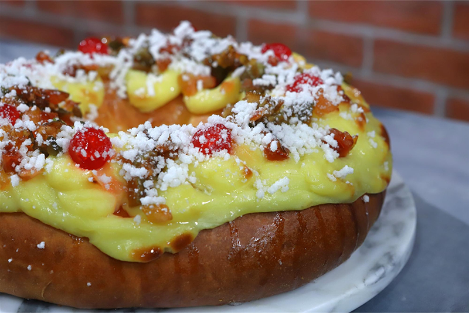

El Gourmet
Rosca con Crema Pastelera por Juan Manuel Herrera
Ingredientes
CREMA PASTELERA
- Azúcar 250 grs
- Huevos 5 Unidades
- Vainilla 1 Chaucha
- Fécula de maíz 30 grs
- Leche 1 Litro
- Harina 80 grs
ESPONJA
- Harina 100 grs
- Leche 125 cc
- Levadura 25 grs
MASA
- Limón para su ralladura 1 unidad
- Manteca 125 grs
- Miel 15 grs
- Huevos 4 Unidades
- Esencia de vainilla c/n
- Esponja 250 grs
- Azúcar 100 grs
- Harina 400 grs
RELLENO
- Azúcar granulada c/n
- Crema pastelera c/n
- Frutas abrillantadas c/n
- Almíbar c/n
Preparación
ESPONJA
- En un bol mezclar harina, leche levadura y dejar levar por 30 minutos.
- Reservar.
MASA
- En un bol mezclar huevos, azúcar, esencia de vainilla, ralladura de limón y la esponja.
- Mezclar, añadir harina y amasar.
- Agregar manteca y seguir amasando hasta obtener una masa suave y homogénea.
- Tapar y dejar reposar por 25 minutos.
- Cortar los bollos (500 gramos), tapar y dejar reposar nuevamente.
- Luego marcar un orificio en cada bollo, agrandar el orificio para que quede del mismo espesor en toda la circunferencia.
- Colocar en una placa enmantecada, pintar con doradura y dejar levar hasta duplicar volumen.
- Decorar con crema pastelera y llevar a horno 180 ºC por 45 min dependiendo del tamaño.
- Una vez salida del horno, decorar con azúcar granulada, fruta abrillantada y almibar.
CREMA PASTELERA
- Calentar la leche con la mitad del azúcar.
- Tamizar fécula y harina.
- Luego unir el resto del azúcar, huevos, harina y fécula.
- Agregar la leche caliente en sobre la preparación anterior.
- Llevar a ebullición y cocinar suavemente sin dejar de batir hasta espesar.
- Retirar la crema pastelera de la olla y dejar enfriar en fuente con papel film en contacto.
